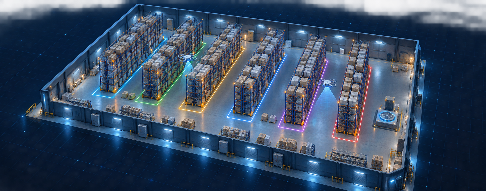

全仓态势库存热力异常分布⌁ 数字孪生同步延迟 86 ms  ⌘D-01 · 扫描中C区 04巷 · 2.8m/s ⌘D-02 · 转场中前往 D区 02巷 ⚡ 自动充电坞 · 空闲⌖ 沁水县城东物流园112.1846°E 35.6982°N ALT 08.4m A 区100%已完成 B 区100%已完成 C 区96%扫描中 D 区88%扫描中 E 区72%待执行 F 区61%待执行 当前分区C 区扫描中盘点完成 96%
▤OPERATION STREAM实时作业流LIVE 16:45:32D-01完成 C 区 04 巷道扫描186 个标签16:44:51D-02抵达 D 区 02 巷道定位误差 4.2 cm16:43:19系统生成异常复核工单 #FD-1028优先级 P116:42:48D-01识别库位 C-04-18 异常置信度 97.8%